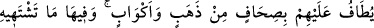
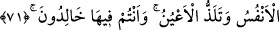
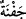
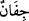
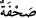
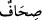
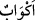
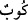

fetha ile cennet seması ve her güzel nağme demektir. Nitekim Rum sûresi 15. âyette
semâ ve nağmeye dâir îzâhat geçmiştir.
et-Te’vilâtü’n-Necmiyye’de şöyle denilmiştir: Siz ve talepte benzerleriniz vuslat
cennetlerine giriniz. Ünsiyet bahçelerinde nimetleniniz.
71. Onlara altın tepsiler ve kadehler dolaştırılır. Orada canlarının istediği,
gözlerinin hoşlandığı her şey vardır. Ve kendilerine: Siz, orada ebedî kalacaksınız
(denir.)
“Onlara” cennete girdikten sonra mümin kullara “altın tepsiler ve” altın “kadehler
dolaştırılır. Orada” cennette “canlarının istediği, gözlerinin hoşlandığı her şey” her
çeşit lezzetler “vardır. Ve kendilerine: Siz” oradan çıkmayacak, ölmeyecek ve “orada
ebedî kalacaksınız, denir.”
Bahsedilen altın tepsileri ve altın kadehleri cennette hizmetle görevli olan civanlar ve
gençler dolaştırır, cennetliklerin etrafında fır fır dönerler. “Tâif” hizmet eden ve evin
etrafında koruma görevini yapan kimse demektir. “__WORD__/itâfet” kelimesi “tavf” ve
“tavâf” kelimesi gibidir. “Tavâf” ise bir şeyin etrafında dönmek demektir.
“__WORD__/cefne” kelimesinin çoğulu “__WORD__/cifân” olduğu gibi “__WORD__/sahfe” kelimesinin
çoğulu da “__WORD__/sıhaf” olup “enli ve geniş kap, tepsi” demektir. Mücâhid, ağızları oval
kaplar demiştir. Süddî ise kulak ve kulpu olmayan kaplardır, demektedir. Bundan
maksad içinde yiyecek bulunan sahan ve tepsilerdir.
İçinde şarap bulunan altın kadehler; yuvarlak, kulpsuz, içi çeşitli şaraplarla dolu
sürâhiler, destiler… “__WORD__/ekvâb” kelimesi “__WORD__/kûb” kelimesinin çoğulu olup içenin
istediği gibi içmesi için kulp ve hortumu, emziği olmayan bardak ve kadehtir.
Müftî Sa’dî şöyle demiştir: Bardak ve kadehler az, sahan ve tepsiler çok yapılmıştır.
Çoğulların kıllet ve kesret kalıpları buna delâlet etmektedir. Çünkü daha çok bilinen ve
yaygın olan, yemek kapları olan sahan ve tepsilere nispetle, içme kapları olan bardak ve
kadehlerin az olmasıdır.
İbn Abbas’tan rivâyet edildiğine göre cennetliklerin etrafında 70 bin altın sahan ve
tepsi ile hizmetçiler dolaşırlar her sahan ve tepside 70 bin çeşit yemek vardır. Her türün
ayrı bir tadı vardır. Bu ikrâm, derecesi en düşük olan için böyledir. Derecesi yüksek
olana gelince onun etrafında altından 700 bin sahan ve tepsiyle hizmetçiler
dolaşacaklardır. Aynü’l- Meâni’ de böyledir.
Cennette yiyecekler, içecekler, eşler, giyecek elbiseler ve binek vâsıtaları gibi
“canların çektiği” her çeşit nimet ve lezzetler vardır.
Es’ile-i Mukhame’de şöyle denilmektedir: Cennet ehline Allah canlarının çektiği